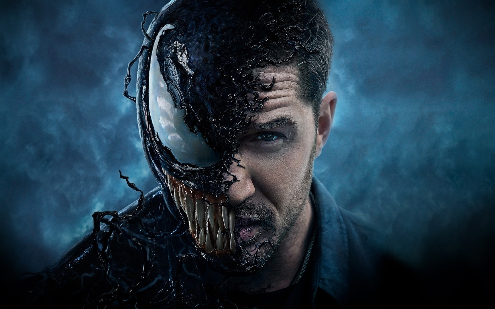

Веном

Вперше появився: Май 1988
Альтернаимвні версії
- Ultimate Marvel
- Earth X
- Marvel 2099
- Spider-Man & Red Sonja
Хто був Веномом:
- Уэйд Уилсон
- Питер Паркер
- Эдди Брок
- Ли Прайс
Хто такий Веном
вигаданий персонаж, який з'являється в коміксах видавництва Marvel Comics, в основному пов'язаних з людиною-павуком.
Перша поява Венома відбулося в The Amazing Spider-Man # 300 (Травень, 1988).
Спочатку виступав як суперзлодій, персонаж згодом набув статусу антигероя.
Веном — симбіот, розумна інопланетна істота в'язкої, практично рідкої форми.
Подібно реальним симбіотам, для того, щоб вижити, він потребує носія, як правило людини.
Єднання з симбіотом надає його власнику надлюдські можливості.
Злиття симбіота з людиною породжує сутність, відому як «Веном».